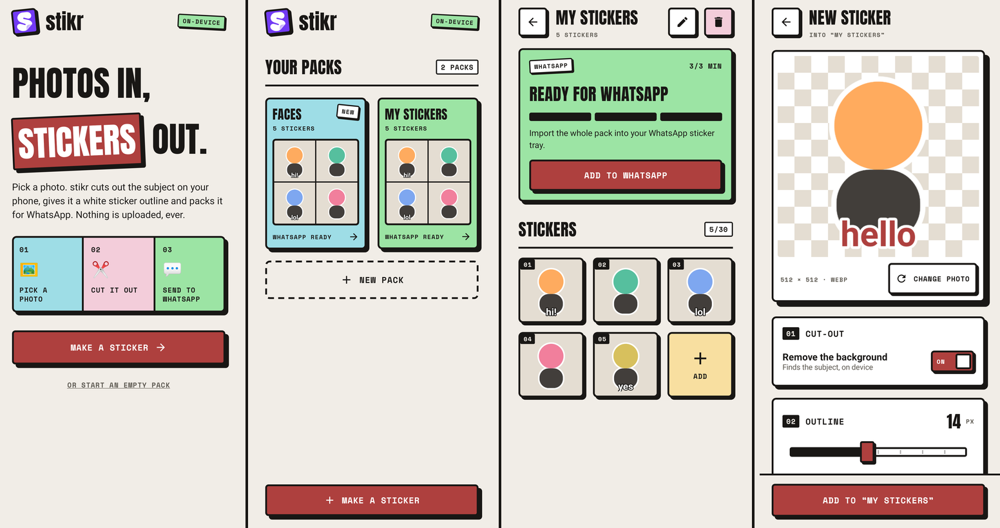

Cut out the subject
ML Kit removes the background on device. Google Play services downloads the model on first use. If cut-out is unavailable, keep the full photo.
Turn a photo into a sticker on your phone. Cut out the subject, add an outline and a caption, then send it to WhatsApp or share it anywhere.
No required sign-in. No watermark. Optional backup.
ML Kit removes the background on device. Google Play services downloads the model on first use. If cut-out is unavailable, keep the full photo.
Pick white or ink and adjust the thickness. Add an optional caption in cream, ink, butter, or cherry, at the top or bottom.
Create, rename, and delete packs. Add or delete stickers. Import a pack of 3–30 stickers into WhatsApp or WhatsApp Business.
Send a sticker as a PNG through Android's share sheet. No account required. Editing and sharing work offline; backups are saved as local files.
Cream paper, ink outlines, pastel cards, and hard shadows. These sample screens use placeholder stickers.

Photo processing stays on device. No required account, analytics, or telemetry. You choose when to share, import a pack, or save a local backup.
Read the privacy details ↗